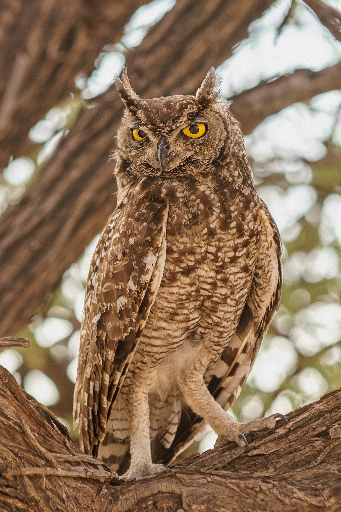

Introduction
Owls are birds of prey that belong to the order Strigiformes. There are more than 200 species, living on every continent except Antarctica.
They are famous for their large forward-facing eyes, silent flight and remarkable hearing. Because of these features, owls have appeared in myths and stories for centuries.

Habits
Most owls are nocturnal, which means they hunt at night. During the day they rest in trees, barns or old buildings, where their feathers help them blend in.
An owl can turn its head up to about 270 degrees, because it cannot move its eyes in their sockets. Special soft feathers let it fly almost without a sound.
What owls eat
- Mice and voles
- Small birds
- Insects
- Frogs and fish (for some species)
A typical owl night
- Wake up at dusk.
- Listen and look for prey.
- Swoop down and catch it.
- Return to the nest or roost before dawn.
Species
Owls come in many shapes and sizes, from tiny birds that fit in your hand to giants with a wingspan of well over a metre.
The table below compares a few well-known species. The figures are approximate.
| Species | Length (cm) | Habitat |
|---|---|---|
| Barn owl | 33–39 | Farmland, barns |
| Tawny owl | 37–46 | Woodland |
| Eurasian eagle-owl | 58–75 | Rocky areas, forests |
| Snowy owl | 52–71 | Arctic tundra |
Learn more
If you would like to read further, there is a detailed article about owls on Wikipedia.
Owls are protected in many countries, so please watch them from a distance and never disturb their nests.